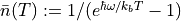
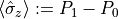
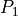
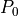

Quantum Simulations
qTools.QuantumToolbox.thermodynamics
Contains methods to calculate certain quantities used in thermal states, open systems, and quantum thermodynamics. TODO update docstring examples and write some tests after writing some tutorials
nBarThermal(angFreq, temp[, hbar, kb])
nBarThermal
Calculates average excitation number  of a bosonic field with frequeny at a temperature T.
qubitPolarisation(freq, temp)
qubitPolarisation
Returns the polarisation  of a qubit with frequency in a thermal state of temperature T.
HeatCurrent(Lindbladian, Hamiltonian, denMat)
HeatCurrent
Calculates the heat current due to given Lindbladian .
Calculates average excitation number of a bosonic field with frequeny at a temperature T. Boltzmann and reduced Planck constants are by default . TODO Physical constants’ default values should be connected to simUnits.
angFreq (float) – (angular) frequency of the bosonic field
temp (float) – temperature
hbar (float) – reduced Planck’s constant
kb (float) – Boltzmann constant
Average excitation number
float
ValueError – If average number is infinite.
Examples
# TODO
Returns the polarisation of a qubit with frequency in a thermal state of temperature T.  and  are excited and ground state populations satisfying , and thermal state populations also satisfy .
freq (float) – frequency of the qubit
temp (float) – temperature of the qubit
qubit polarisation, i.e. difference betwennn ground and excited state populations.
Calculates the heat current due to given Lindbladian . Here, is the system Hamiltonian, and the time derivative of density matrix is . It does not strictly speaking have to be a Lindbladian but any combination of terms from a Liouvillian. Disclaimer: physical meaning of those terms is not and cannot be interpreted by this function. TODO Write a bit of the theory here to better explain this function.
Lindbladian (Matrix) – a Lindbladian or any combination of terms from a Liouvillian
Hamiltonian (Matrix) – Hamiltonian of the system
denMat (Matrix) – Density matrix (state) of the system
Heat current
qTools.QuantumToolbox.quasiProbabilities
qTools.QuantumToolbox.rmtDistributions